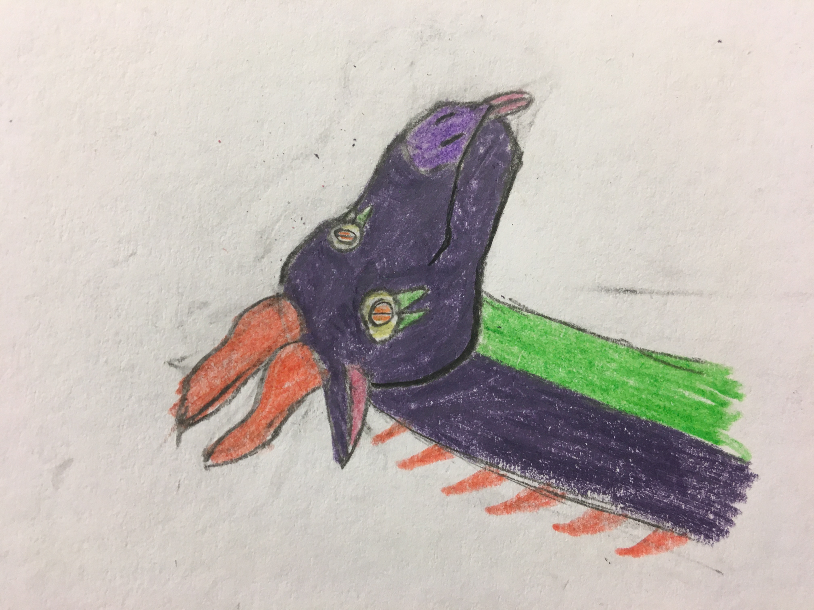
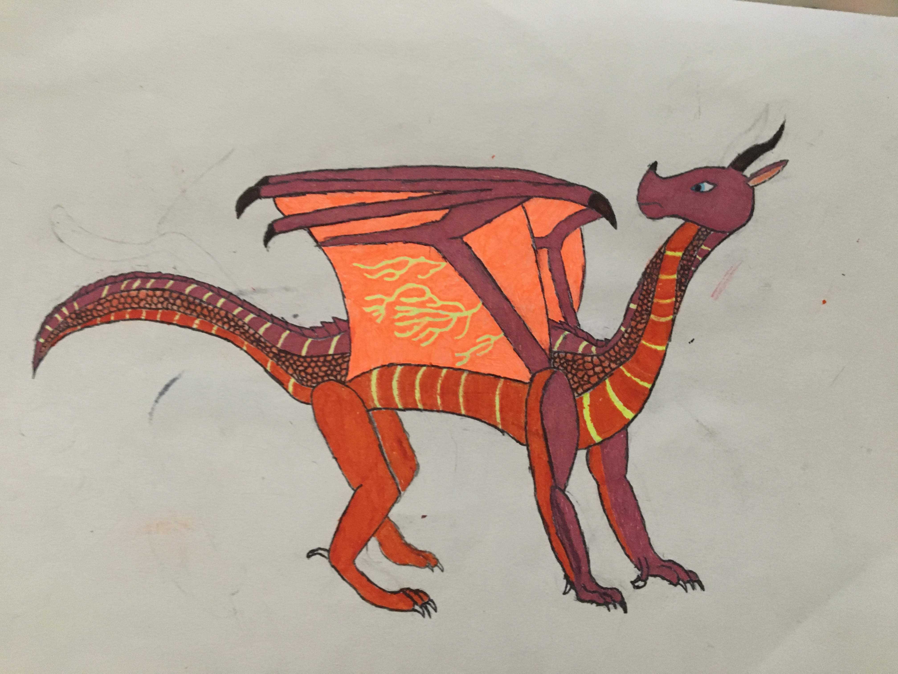
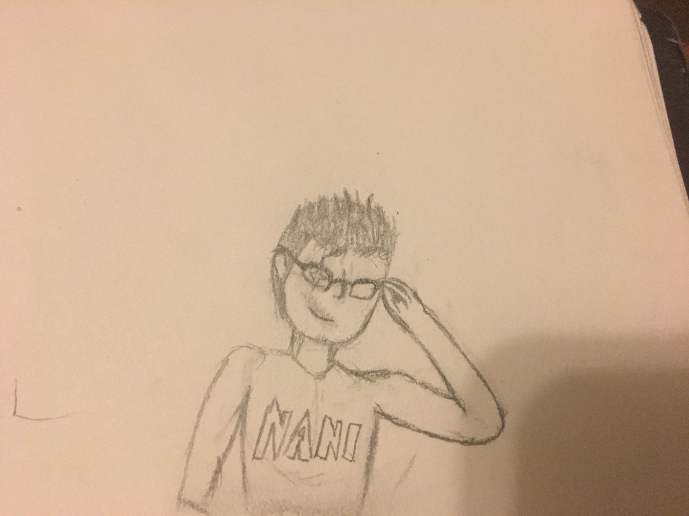
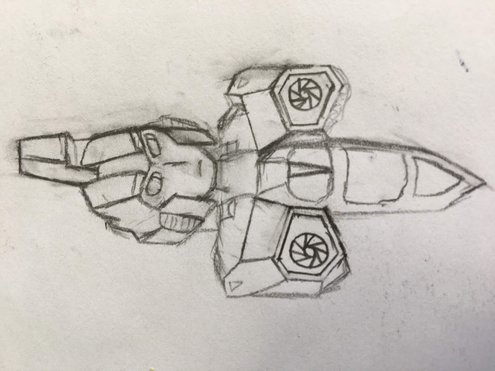
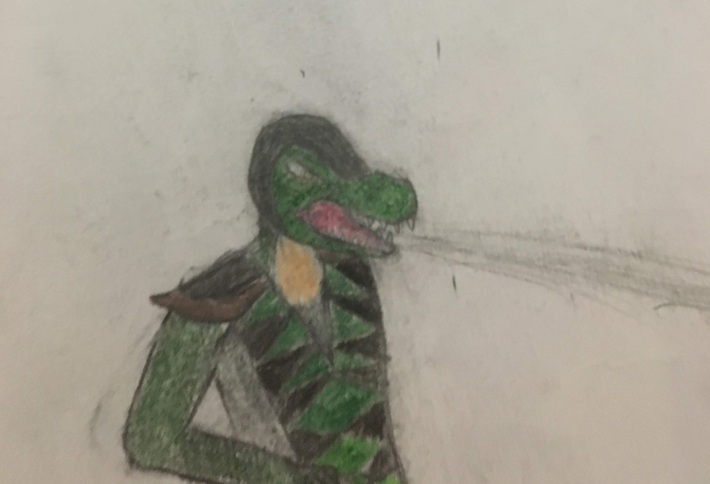

Benevolent

This is Benevolent they are a purple and green dragon with read horns and spines. I created them out of my interest in dragons and a desire to have my very own dragon character. I drew them with their tongue out because I wanted to make them look cute and non-threatening although they are very capable of defending themselves and especially their close friends.
Peril

This is Peril. She is my favorite character from the "Wings of Fire" book series. She first appeared in the first book and has been my favorite ever since. I based this drawing off of her design off of the cover of the 8th book and while I am not entirely proud of the coloring I am slightly impressed how I drew her neck.
Old friend

This is an old friend of mine I had in middle school.
Starscream

This is an unfinished drawing of the decepticon commander Starscream from Transformers. I used the Flame Toys model kit as reference for this drawing
Reptile

This is Reptile from Mortal Kombat. This is my reimagination of him was he is a full lizard person including a long snout and his helmet from MK9 as well as a green and black ninja gee.